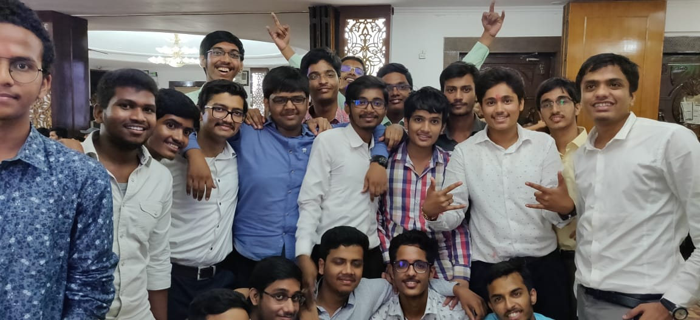
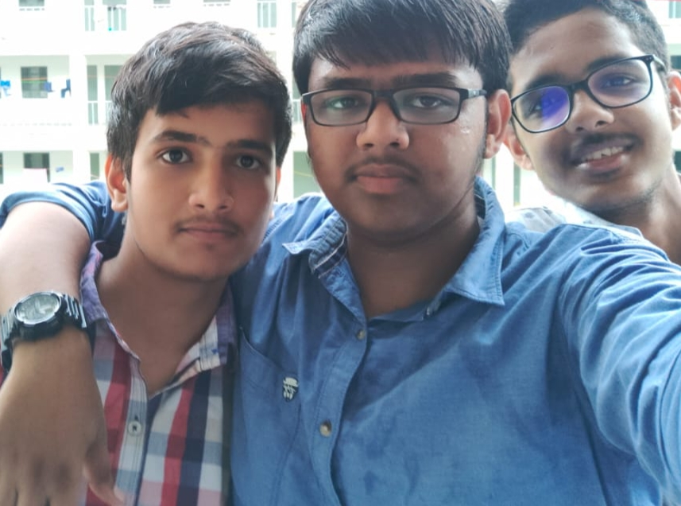
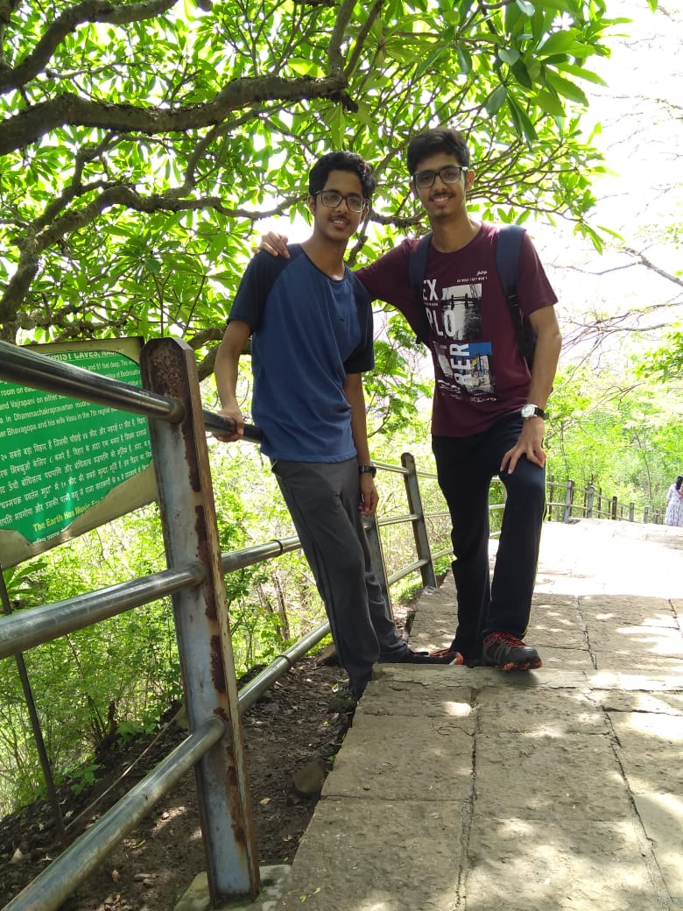
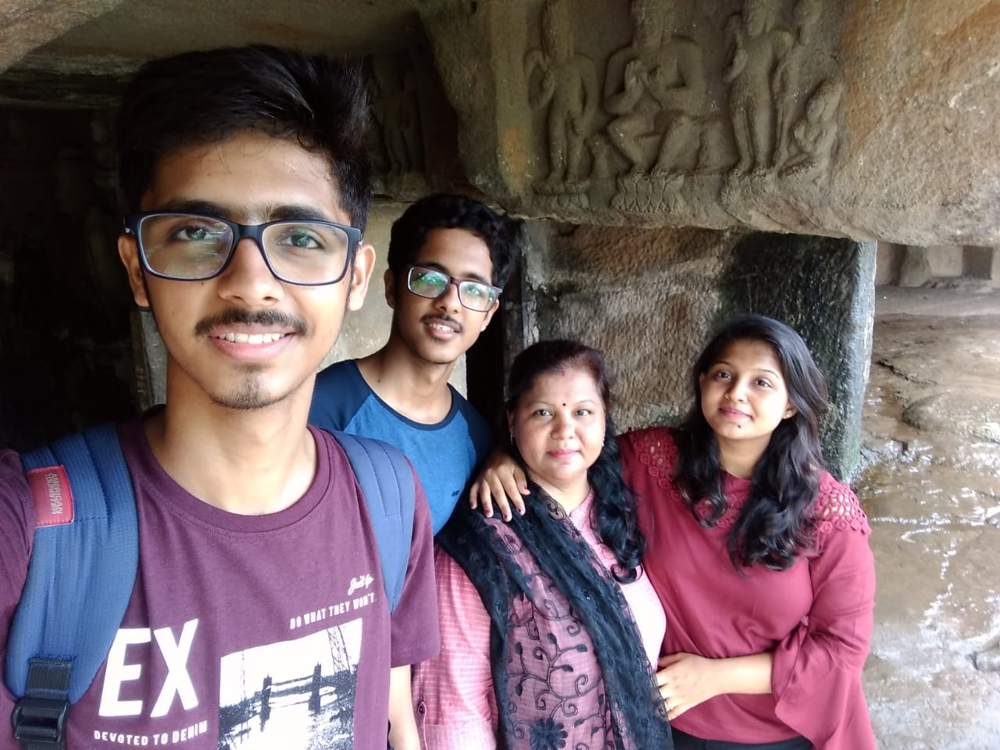
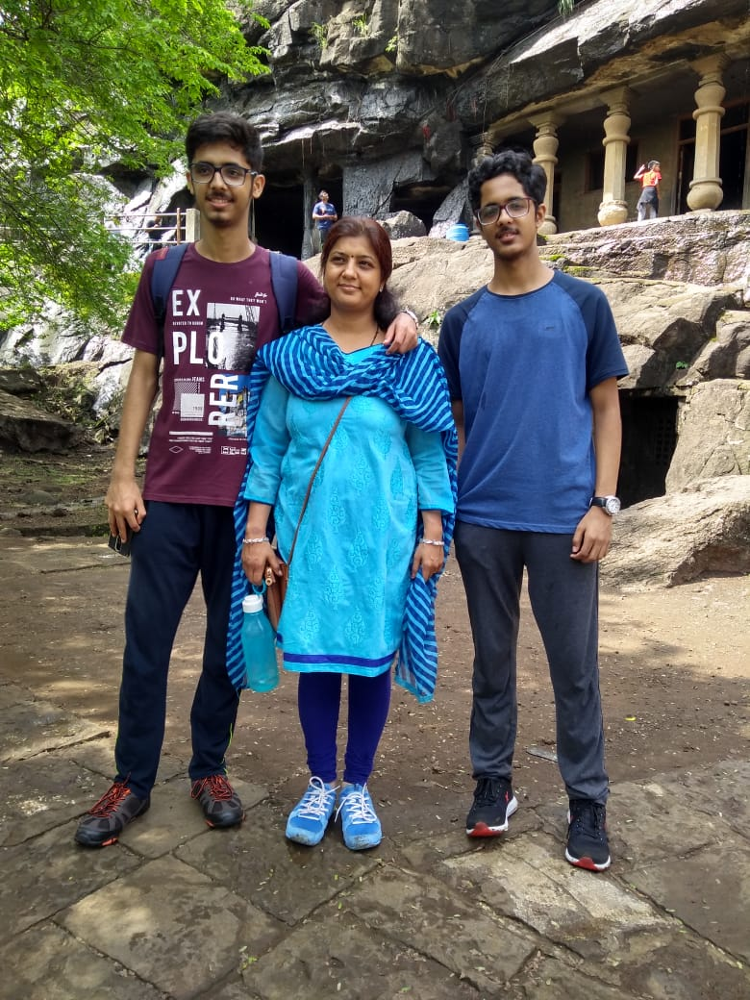
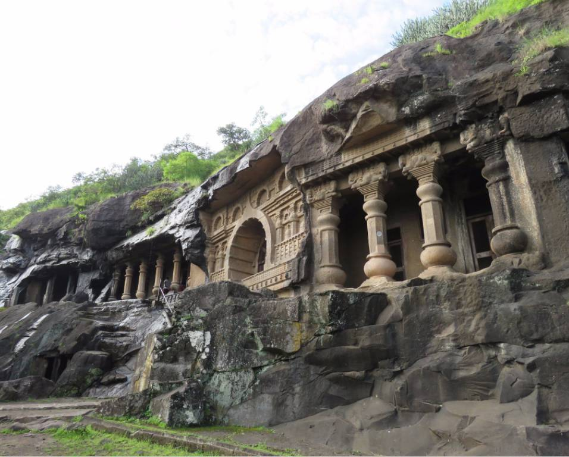

Some memories.....
- THE FRESHERS PARTY: After coming to this new world of R-Land, the freshers party has become my unforgettable memory. It was organised by seniors and proved to a fabulous party with a lots of enjoyment. It was a good get-together for all the students of first as well as second year. We all danced, sang and enjoyed ourselves. We also had the oppurtunity to meet and interact the seniors of the fourth year. It was good to take advises from someone who has four years of experience in the college


- THE VISIT TO THE PANDAV CAVES:Situated at the outlines in the historical city of Nashik, the Pandav Caves are one of the chief tourist attraction of Nashik. Due to its natural beauty and the historical importance in the Hindu Mythology, it attracts tourists from all over the state. It also serves to be a good spot for trekking. The Monsoon season makes this mountain look like heaven. This visit with my family as well as my cousins is one of the non-cherishing memory in my mind.



